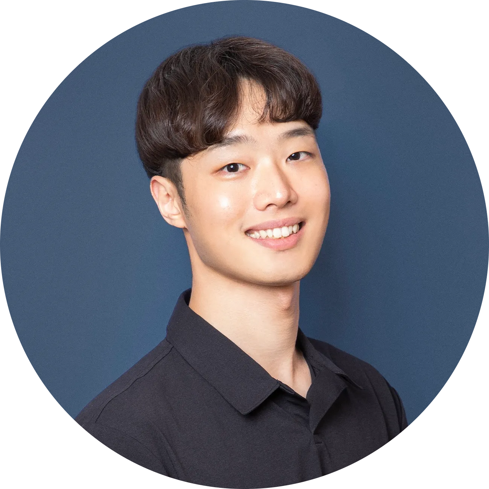

김만수 (Mansoo) | Software Engineer, AI Agent

Contact.
E-Mail. contact@teddy-kim.com / mansoo0621@naver.com
Phone. 010-9193-0828
Channel.
GitHub. https://github.com/hello-mansoo
Introduce.
“본질을 꿰뚫는 엔지니어”로, 문제의 본질을 꿰뚫어 보고 기술과 비즈니스의 경계를 넘나들며 제품의 성공에 필수적인 근본적 문제를 해결하기 위해 전념하는 Software Engineer 입니다.
개발하는 과정에서 저는 늘 “왜 이 기술이 필요한가?”, “현재 상황에서 이것이 정말 최선의 선택인가?” 라는 질문을 스스로에게 던지며, 그 답을 찾는 과정에서 다양한 기술을 신속하게 습득하고 적용해 왔습니다. 이 과정은 저에게 기술적 해결책에만 국한되지 않고, 기획과 디자인의 관점까지 연결해 문제를 바라보고 해결하는 유연성을 갖게 했으며, 최신 기술을 맹목적으로 적용하기보다 상황에 적합한 선택을 위해 trade-off를 고려하는 습관을 만들었습니다.
5년 간의 개발 경험을 바탕으로 Global Conversations Platform API와 AI Agent를 서비스하는 Sendbird에서 커리어를 확장해 왔습니다. Web Front-end 기반으로 시작했지만, Sendbird에서는 Developer Advocate로 AI Chatbot 제품을 중심으로 제품 주도 성장(PLG)을 위한 콘텐츠/온보딩(Engineering + Marketing) 을 경험하며 AI 제품을 깊이 다루기 시작했고, 이후 제품을 직접 체험할 수 있는 데모 경험을 구축하며 제품화 역량을 넓혔습니다.
현재는 Software Engineer, AI Agent로서 AI Agent testing & evaluation을 위한 Internal platform을 개발하며, 누군가가 정의해 준 요구사항을 구현하는 데서 멈추지 않고 문제 상황을 정의하고 기획·디자인·구현까지 high-level에서 연결해 더 빠른 검증과 개선이 가능한 워크플로우를 만들어가고 있습니다.
또한 개인 기술 블로그와 LinkedIn을 통해 일상에서 마주친 문제를 어떻게 해결했는지 기록하고 공유해왔고, DevRel 커뮤니티 Devchat에서 Organizer로 활동하며 그동안 배우고 탐구한 것들을 실제 실행으로 옮기는 데 주력해 왔습니다.
변화하는 기술과 비즈니스 환경 속에서도 그 본질을 깊이 이해하고, 새로운 도전을 통해 더 나은 가치를 창출해 나가는 개발자가 되기 위해 노력하고 있으며, 이러한 경험들은 팀과 조직이 더 빠르게 학습하고 실행하는 데 기여할 수 있다고 믿습니다.
Work Experience.
Enterprise 고객을 위한 Communications Platform API와 AI Agent 기반 고객 경험 솔루션을 제공하는 실리콘밸리의 서비스형 소프트웨어 (SaaS) 유니콘 기업
Software Engineer, AI Agent (2025.02 ~ Present)
- AI Agent 테스트·평가를 위한 내부 플랫폼 (Internal platform for AI Agent testing & evaluation)
- 킥오프 단계부터 요구사항 정의 → 제품 기획/UX → 구현/개선까지 전 과정에 참여하며 핵심 기능 개발에 기여 (core contributor)
- 대화 시나리오 기반 테스트/평가 방식을 정리하고, 내부/고객 피드백을 반영해 지속적으로 개선
- 확장 과정에서 Frontend/Backend 아키텍처 전환에 참여(리뷰·정합성 검증 중심)하여 기능 누락 방지 및 품질 안정화에 기여
- PoC 가속을 위한 리뷰·라벨링 내부 플랫폼 (Internal human review & labeling platform for PoC acceleration)
- PoC 과정에서 빠른 검증을 위해 리뷰/라벨링 워크플로우를 지원하는 내부 툴을 설계·구축 (core contributor)
- 기능 기획 → DB 스키마 구성 → UI/UX → 구현을 짧은 개발 사이클로 진행하며, 필요한 기능을 우선 적용해 빠르게 검증
- 현장 피드백을 수집해 개선사항을 정리하고, 짧은 주기로 반영하여 PoC 실행 속도 및 운영 효율을 개선
Developer Advocate (2024.07 ~ 2025.02)
- Demos hub 프로젝트 (Demo experience hub for product discovery | https://sendbird.com/demos)
- Product Marketing / Design team과 협업해 제품 데모 경험을 한 곳에 모은 웹 허브의 기획·구축에 기여 (core contributor)
- 초기에는 각 use case 페이지에 데모를 임베드(iframe) 형태로 제공하는 v1을 구축해 빠르게 검증하고, 세션 리플레이/행동 분석 등 사용자 행동 데이터를 기반으로 개선 포인트를 도출
- 데이터 근거로 Demos hub로의 구조 전환을 제안하고 합의를 이끌어, 정보 구조 및 데모 제공 방식 개선을 추진
- 제품을 “바로 체험”할 수 있는 진입 경로를 강화해 온보딩 및 세일즈/마케팅 활동을 지원
- AI Chatbot 온보딩·활용 확산 콘텐츠 (AI Chatbot enablement content for PLG)
- 비전문가/주니어 개발자 대상의 실전형 가이드(영상/문서)를 제작해 제품 이해와 초기 셋업을 지원
- Prompt 설정, 주요 기능 구성, 웹사이트 삽입(CMS/사이트 빌더 등) 중심으로 재현 가능한 튜토리얼 형태로 구성
- Docs 사이트 운영 및 개선 (https://sendbird.com/docs)
- 사용자 피드백 제출 플로우의 병목을 분석해(Serverless 처리 구간 포함) 개선을 진행하고, 응답 시간을 15초 → 5~6초 수준으로 단축
- Technical Writer와 협력해 문서 구조/탐색 경험 개선에 참여하고, known issue를 지속적으로 해결
프리미엄 안경 브랜드 REGACY(https://regacy.co.kr) 를 운영하고 있는 초기 스타트업
CTO (2024.01 ~ 2024.07 | 계약직)
대학교 4학년 1학기와 병행하며 기술 전반을 총괄했고, 한정된 리소스 환경에서 비즈니스 관점의 trade-off를 고려해 MVP → 단계적 고도화 방식으로 추진했습니다.
- REGACY 브랜드 쇼핑몰 구축
- 기획/디자인을 바탕으로 범위·일정(공수)을 산정하고, 반응형 쇼핑몰을 구축
- 재사용 가능한 공통 UI 컴포넌트를 설계·구현(슬라이더/모달 등)
- 대용량 고화질 미디어 제공을 위해 HLS 도입, AWS(S3/CloudFront/WAF) 기반 배포·보안·비용 최적화
- 신규 B2B SaaS 프로덕트 개발(총괄)
- 산학협력 진행을 위한 초기 기획/협의를 주도하고, MVP 기준 마일스톤·로드맵을 정의
- Notion 기반으로 ALM (Application Lifecycle Management) + 문서 관리를 통합한 프로젝트 운영 체계를 구축
- 모노레포 기반 Front-end 개발 및 Docker·GitHub Actions·AWS 기반 CI/CD 구성/고도화를 추진
2016년 창업 이후 연평균 75%의 성장을 투자 없이 자체적으로 이뤄내고 있는 스타트업
병행을 위해 사측과 협의해 프리랜서로 계약을 변경해 근무했습니다. (근무 내용은 동일)
Frontend Developer (2022.07 ~ 2023.12)
B2B CRM SaaS “공비서”의 웹 프론트엔드를 담당했습니다. JSP 레거시와 React/Next.js/TypeScript 기반 화면이 공존하는 환경에서 신규 기능 개발, 레거시 마이그레이션, 프론트 인프라 운영/장애 대응을 수행했으며, 기술협의체의 일원으로 주요 기술 변화와 아키텍처 방향성 논의에 참여했습니다.
- CRM 캘린더·예약 도메인 개편
- PoC 기반으로 구현 방식을 검증하고, 범위/일정(공수)을 산정해 개발 계획을 수립
- 예약 등록 기능을 설계·구현하며 공통 로직을 추상화하고, 케이스별 분기/레거시(JSP) 연동을 정리
- WebView 공통 UI 컴포넌트(BottomSheet 등)와 앱–웹 브릿지 연동을 설계(네이티브 개발자와 협업)
- JSP↔Next.js 혼재 환경의 로컬 연동을 위해 nginx 리버스 프록시를 구성하고 팀 적용을 위한 문서화/가이드 제공
- 고객 데이터 이관 기능 개발
- Drag & Drop 업로드 컴포넌트 구현 및 파일 포맷 검증/제한 로직 추가
- Front-end 운영/장애 대응
- APM 도입 후 트래픽 및 JavaScript 에러를 모니터링하고 라이브 이슈를 추적
- 장애 대응 시나리오를 정리하고 문서화하여 운영 안정성을 개선
- 기타
- 코드 리뷰 프로세스/문화 개선안을 정리해 개발 파트에 적용 (https://blog.teddy-kim/improve-code-review)
- 프론트엔드 채용 인터뷰 참여 및 사내 요청 기반 웹 페이지 개선, 비개발 직군 대상 기초 강의 진행
Scrum Master (2023.01 ~ 2023.04)
- 캘린더 개편 스쿼드의 데일리 스크럼, 스프린트 리뷰/회고를 운영하며 진행을 지원했습니다.
- 직군별 업무 특성을 고려해 커뮤니케이션을 정리했고, 스프린트 중 발생하는 기술 이슈에 대해 팀 간 조율을 돕습니다.
2014년 출시 이후 누적 가입자 수 660만명을 보유한 데이팅 앱 아만다, 데이팅 앱 최초로 이상형 월드컵 시스템을 도입한 너랑나랑, 누적 다운로드 1,200만을 돌파한 운세 앱 점신을 서비스하는 스타트업으로, KTB네트워크, HB인베스트먼트로부터 60억원의 투자 유치, IBK투자증권과 주관사 계약 후 IPO 추진.
신사업팀 Frontend Lead (2021.02 ~ 2022.07)
신사업팀에서 여러 프로젝트의 Front-end 개발을 담당했고, 범위/일정 산정부터 팀 내 협업 프로세스까지 정리하며 Front-end 파트를 리드했습니다. SPA/MPA 혼재 환경에서 공통 구조/컨벤션을 수립하고, 배포/운영 체계를 표준화해 생산성을 높였습니다.
- HTML5 / CSS3 / JavaScript (ES6) / jQuery / Kendo UI Framework / PHP v7.4 / MySQL 기반 웹 애플리케이션 개발 (SPA - Single Page Application / MPA - Multiple Page Application 복합적으로 진행)
- 공통 컴포넌트/유틸을 설계·구현하고, WebView 기반 앱–웹 연동(Android/Flutter) 을 지원
- 기획/백엔드와 협업해 기능 범위·일정 산정 및 업무 분장을 진행하고, PR 리뷰/머지 프로세스를 운영
- Git 브랜치 전략 및 배포 프로세스를 정리하고, 개발 서버 CD 자동화와 버저닝/배포 문서 템플릿을 구축
- Jira/Confluence 도입 및 업무 요청 프로세스 정립, 협업 툴 가이드/내부 교육 및 온보딩 체계를 마련
- 아만다 서비스 소개 페이지 리뉴얼, 아만다 & 너랑나랑 랜딩, 이벤트 페이지 개발 (https://amanda.co.kr)
Backend Developer (2021.01 ~ 2021.05)
신사업팀에서 런칭, 운영하고 있는 탈모 커뮤니티 서비스 머리바바의 서버 API 개발 & 유지보수를 담당했습니다.
- PHP(MariaDB) 기반 API 개선 및 운영성 강화(우선순위 조정 → 개선 → 배포)
- 이벤트 수집 시스템 구축 및 CMS 대시보드 기능 개발로 지표 확인/운영 편의성 향상
- 차단 기능, 로그인/푸시(FCM) 개선, SSL 자동 갱신 배치, 일부 SQL 튜닝 등 운영 이슈 해결
QA (2020.07 ~ 2020.12)
개발 프로세스를 익히며 신규 기능 런칭 품질을 담당했고, 요구사항 기반 테스트 설계/수행 및 이슈 트래킹을 진행했습니다.
- 기획안 검토 후 QA 일정 산정, 테스트 케이스 설계/유지보수
- 요구사항 분석 기반 테스트 수행 및 Jira 기반 버그 리포팅/이슈 추적
- 런칭 후 회귀 테스트 및 지속적 품질 개선
2013년 비영리법인으로 시작해 국내외 9,000여명의 대학생에게 프로그래밍 교육을 제공. 2018년 5월 영리법인으로 전환하여 '멋쟁이사자처럼 대학생' / '직장인' / 'AI School', '광주인공지능사관학교' 등의 오프라인 교육과 글로벌 온라인 코딩 교육 플랫폼 '프로젝트 라이언'을 개발, 운영.
대학생 Community Manager (2020.04 ~ 2020.10)
전국 대학 커뮤니티 운영을 지원하며 본부–학교 대표 간 커뮤니케이션을 조율했습니다.
- 50개 대학 대표들과의 격주 대표 회의를 총괄 운영
- 본부–학교 대표 간 운영 커뮤니케이션 및 지원 업무 수행
- 기존 강의 제작 방식 개선: 대표들이 직접 강의를 제작하는 프로젝트를 기획·리드
8기 공식 강의 Lecturer (2020.04 ~ 2020.16)
- 공식 온라인 강의 “Django 기초 – 드리머리 만들기” 기획·제작(총 8강)
Other Experience.
Community.
Devchat Organizer (2024.01 ~ Present)
국내 DevRel 관심/실무자들이 교류하는 커뮤니티 Devchat(DevRel Alliance @KR) 운영진으로 활동하고 있습니다. 운영진 중 유일한 개발자로서, 개발자들이 DevRel 분야에 자연스럽게 입문하고 참여할 수 있도록 활동을 지원합니다.
- 커뮤니티 운영 전반에 참여하며, 개발자 관점에서 프로그램/세션 기획 및 운영 지원
- DevRel·개발자 참여를 확대하기 위한 온보딩/가이드 성격의 콘텐츠 및 활동을 기획·실행
- 커뮤니티 운영 과정에서 필요한 기술적 지원(웹/툴링/운영 자동화 등)을 수행
Speaker.
- Devchat Night - Community Session (2025.12.03)
- 개발자에서 어드보케이트로, Devchat과 함께한 성장기 (공유가 만들어낸 커리어의 확장과 DevRel로의 전환)
- Related article: https://www.cio.com/article/4111488/개발자-ai-지원-어디까지-왔나앤트로픽·토스·올리.html
- Devchat - Monthly Meetup (2025.08.29)
- DevRel 담당자들을 위한 Vibe Coding Quickstart
- Devchat - Monthly Meetup (2024.11.02)
- Moderator - 글로벌 빅테크 기업들의 DevRel
- 우아한형제들 - 우아콘 (WoowaCon) (2024.10.30)
- Ignite Track - 첫 입사 후 1년 간 4번의 직무 전환, 저 큰일난 걸까요?
- 현대자동차그룹 - HMG DEVELOPERS (2024.10.30)
- HMG Developers 필진 대상 온라인 글쓰기 강의
- SSG닷컴 - 데브톡 (2024.04.12)
- 사이드 프로젝트 덕분에 ${job}이 되었습니다 (부제: 주저하는 직장인들을 위해)
- GDSC (Google Developer Student Club) Yonsei - oTL Tech Meetup (2024.03.28)
- 사이드 프로젝트 덕분에 ${job}이 되었습니다
- GDG (Google Developer Group) Seoul - DevFest 2023 (2023.12.02)
- 코드 리뷰 문화를 리뷰해 봐요 (PR Reminder Bot 개발 이야기)
- SK DEVOCEAN - Tech Day (2023.10.20)
- 코드 리뷰 문화를 리뷰해 봐요 (PR Reminder Bot 개발 이야기)
Side Project.
- 코드 리뷰 프로세스 개선 & PR Reminder Bot 개발
- 한식 뷔페 점심 메뉴 이미지 Crawling Slack Bot 개발 & 사내 구성원들을 위해 배포
- Notion을 Database로 활용하는 Next.js 기반 개인 기술 블로그 개발 및 운영
- 식당 O2O 예약 및 주문 플랫폼 “바로잇”
- 명지대학교 창업경진대회 우수상 수상 - 2019.11
- 팀장으로서 전체적인 프로젝트 진행, 유관 부서와의 커뮤니케이션, 프레젠테이션 총괄 진행
- 멋쟁이사자처럼 at 명지대(서울) 8기 지원 사이트
- Python 기반 웹 프레임워크 Django를 활용해 SSR 방식으로 개발
- 유저 시나리오 중 예외 케이스의 발생을 방지해야 하는 부분으로 허위 가입과 중복 지원을 방지해야 한다고 판단, 가입 과정에서 이메일 인증과 지원서 제출이 이루어지면 다시 제출 과정으로 접속할 수 없도록 예외 처리
- Frontend / Backend 파트로 이원화, Git을 활용한 협업 진행
Mentoring / Interview / Meetup.
- 멋쟁이사자처럼
- 대학 특강 - 알럼나이 (2024.10.25) “전공 과목조차 따라가지 못하던 제가 센드버드에서 개발을 한다고요?”
- 어흥콘 (2024.09.29) - 세션 진행 및 심사위원
- 4호선톤 (2024.11.27) - Front-end 심사위원
- 서울대학교 실전전략컨설팅학회 ACT
- 데이터 사이언스, 프로그래밍 분야의 “직무 역량"과 “성인 온라인 직무 교육"에 대한 현직자, 채용 담당자 인터뷰 (2021.11.08)
- 명지대학교 ICT융합대학 학술 동아리 Build
- 현직자 Webinar (2021.04.14)
- 멋쟁이사자처럼 at 명지대(서울)
- 선배와의 만남 (2021.05)
Etc.
- 명지대학교 DIY 해외도전 프로그램 미국 실리콘밸리 연수 - 2019.12 - 2020.01
- 서울관악진로교육센터 융합소프트웨어학부 멘토 - 2019.07 - 2020.06
- 명지대학교 입학처 전공알리GO 융합소프트웨어학부 멘토 - 2019.03 - 2019.12
- 명지대학교 입학처 전공알리GO 컴퓨터공학과 멘토 - 2018.03 - 2018.12
Skill.
- Front-End
- React, Next.js, TypeScript, Styled-Component, Emotion, Tailwind CSS, JavaScript (ES5+), jQuery, HTML, CSS, JSP
- Back-End
- Django, PHP, Linux, AWS EC2 / Elastic Beanstalk / ECR, Nginx, Apache, Docker
- Database
- MySQL, MariaDB, MongoDB
Education.
2018.03 - 2025.02 | 명지대학교 융합소프트웨어학부 응용소프트웨어 전공
- Java 기반 CS/소프트웨어 설계(디자인 패턴, 분산 프로그래밍) 학습 및 Spring Boot 기반 REST API 프로젝트 수행
- ERP/RPA/BPA 과목을 수강하며 비즈니스–IT 융합 관점 확장
- 창업경진대회: 식당 O2O 서비스 기획·프로토타입 개발, 우수상
- 입학처 전공알림단/공공기관에서 소프트웨어 전공 멘토링 진행